9. Máquinas de Vectores de Soporte
Resumen
Las máquinas de vectores de soporte (Support Vector Machines, SVM) son un conjunto de métodos de clasificación y regresión supervisados que construyen una frontera de decisión basada en un subconjunto de las observaciones de entrenamiento llamados vectores de soporte. En este capítulo cubrimos el clasificador de máximo margen, el clasificador de vectores de soporte y la máquina de vectores de soporte con kernels.
Clasificador de Máximo Margen
Hiperplano Separador
Un hiperplano en \(p\) dimensiones es un subespacio afín de dimensión \(p-1\) definido por:
\[\beta_0 + \beta_1 X_1 + \beta_2 X_2 + \cdots + \beta_p X_p = 0\]
Si los datos son linealmente separables, existe un hiperplano que separa perfectamente las clases. La Figura 1 muestra dos hiperplanos separadores posibles para un conjunto de datos simulado en \(p = 2\) dimensiones.
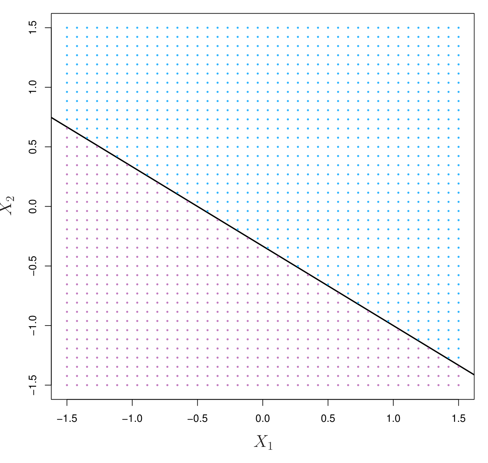
Construcción del Clasificador de Máximo Margen
El clasificador de máximo margen es el hiperplano que maximiza la distancia mínima a las observaciones de entrenamiento. El margen es la distancia perpendicular desde el hiperplano hasta la observación más cercana.
Las observaciones que se encuentran exactamente sobre el margen determinan el hiperplano y se denominan vectores de soporte. La Figura 2 muestra el hiperplano de máximo margen para datos simulados.
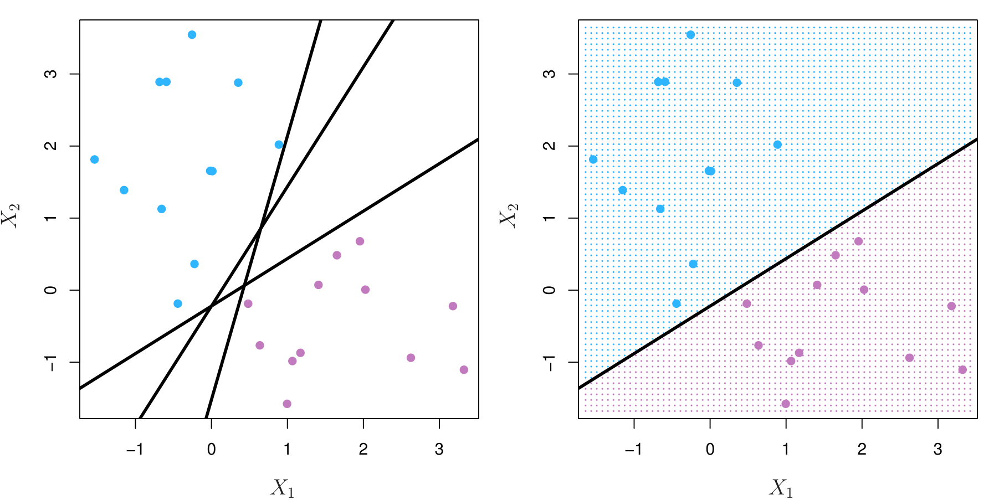
Clasificador de Vectores de Soporte
En la práctica, las clases rara vez son perfectamente separables. El clasificador de vectores de soporte (también llamado SVM de margen suave) permite que algunas observaciones estén del lado incorrecto del margen o del hiperplano. Introduce una holgura (slack) \(\epsilon_i \ge 0\) para cada observación:
\[\max_{\beta_0, \ldots, \beta_p, \epsilon_1, \ldots, \epsilon_n} M \quad \text{sujeto a} \quad \sum_{j=1}^{p} \beta_j^2 = 1, \quad y_i(\beta_0 + \sum \beta_j x_{ij}) \ge M(1 - \epsilon_i), \quad \epsilon_i \ge 0, \quad \sum \epsilon_i \le C\]
El parámetro \(C\) controla el margen: un \(C\) pequeño da un margen estrecho con pocas violaciones; un \(C\) grande da un margen ancho con más violaciones.
La Figura 3 compara clasificadores de vectores de soporte con diferentes valores de \(C\) para datos simulados.
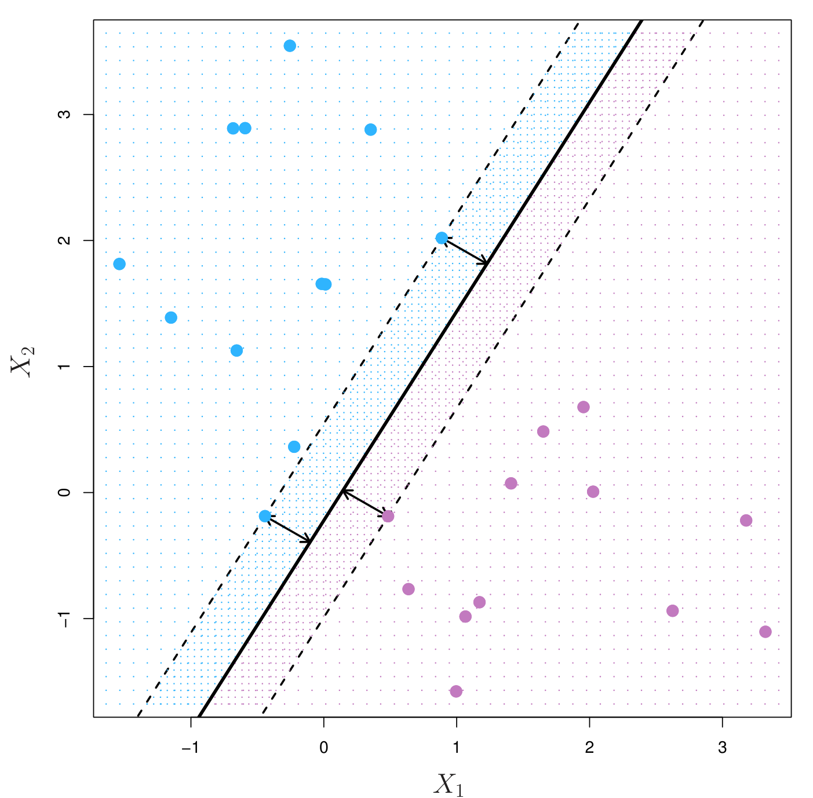
La Figura 4 muestra cómo cambian los vectores de soporte al variar \(C\) en un problema de clasificación con datos simulados.
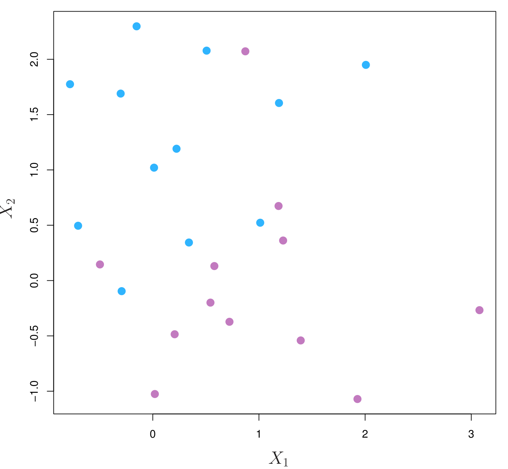
Máquina de Vectores de Soporte
Cuando la frontera de decisión no es lineal, podemos usar el truco del kernel (kernel trick) para proyectar los datos a un espacio de mayor dimensión donde sean linealmente separables. El clasificador resultante es una máquina de vectores de soporte (SVM).
La función de kernel más común es el kernel radial (RBF):
\[K(x_i, x_{i'}) = \exp\left(-\gamma \sum_{j=1}^{p} (x_{ij} - x_{i'j})^2\right)\]
La Figura 5 compara la SVM lineal con la SVM con kernel radial para datos simulados no linealmente separables.
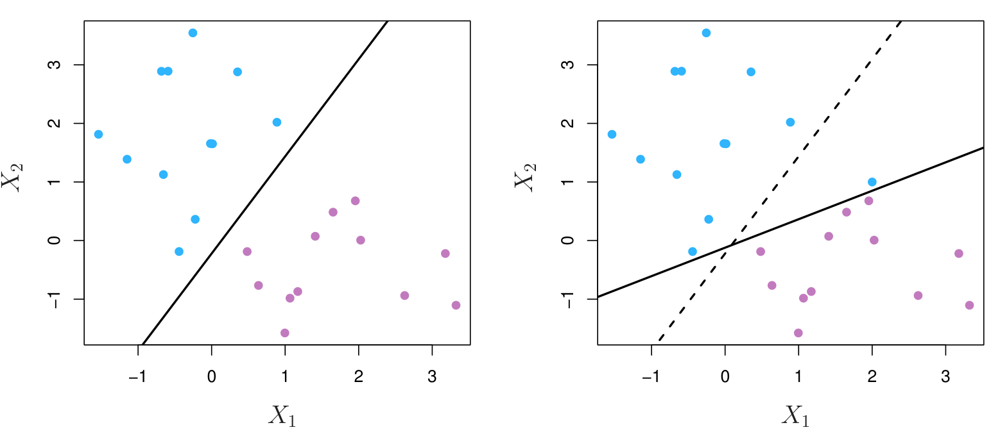
La Figura 6 muestra la SVM con kernel radial variando el parámetro \(\gamma\) para datos simulados.
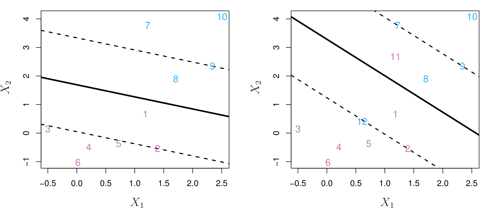
La Figura 7 ilustra el efecto combinado de \(C\) y \(\gamma\) en la frontera de decisión de una SVM con kernel radial.
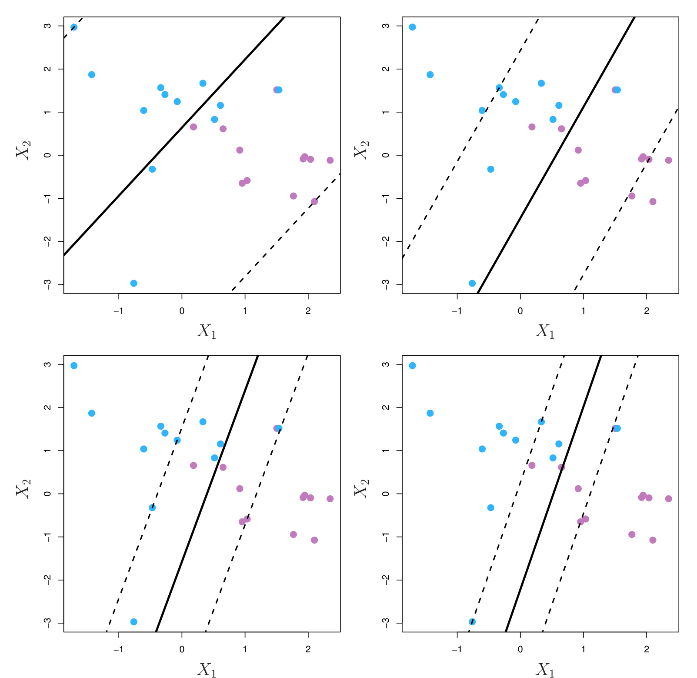
SVM con Más de Dos Clases
Existen dos enfoques principales para extender SVM a problemas multiclase:
- Uno contra uno (one-vs-one): ajusta \(K(K-1)/2\) clasificadores binarios.
- Uno contra todos (one-vs-all): ajusta \(K\) clasificadores binarios.
Relación con Métodos Estadísticos
La SVM tiene una conexión profunda con la regresión logística y otros métodos estadísticos. De hecho, la SVM puede verse como un caso particular de minimización de una función de pérdida (pérdida bisagra o hinge loss) con regularización \(L_2\).
Aplicaciones
Las SVM se utilizan en una amplia variedad de problemas, desde clasificación de texto hasta diagnóstico médico. La Figura 8 muestra la aplicación de SVM a datos de expresión génica (microarrays), donde el número de predictores (\(p\)) es mucho mayor que el número de observaciones (\(n\)).
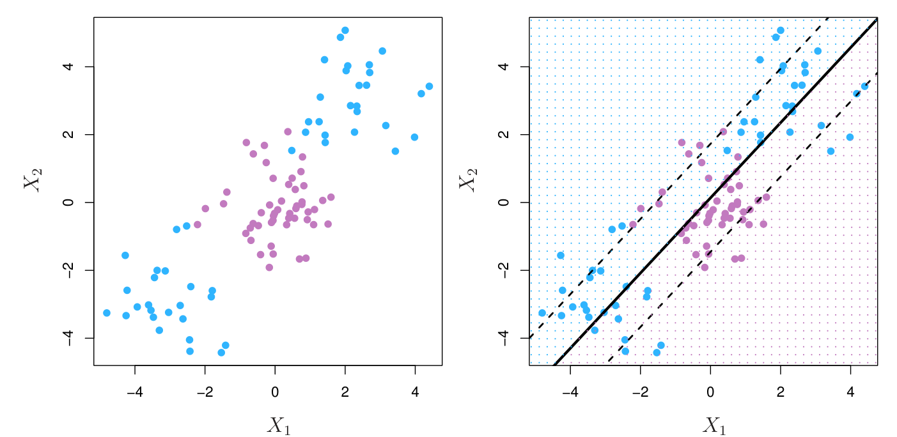
La Figura 9 compara SVM con otros clasificadores (regresión logística, LDA, QDA, KNN) en diferentes escenarios simulados.
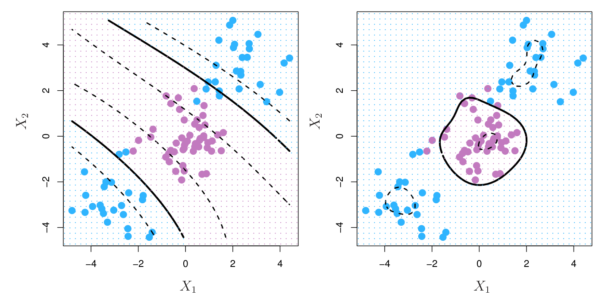
La Figura 10 muestra la superficie de decisión de una SVM con kernel polinomial de grado 2 en datos simulados.
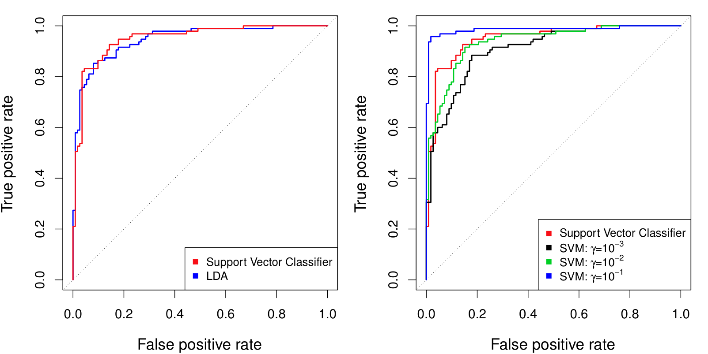
La Figura 11 y Figura 12 presentan más comparaciones de SVM con diferentes kernels y parámetros en problemas de clasificación multiclase.
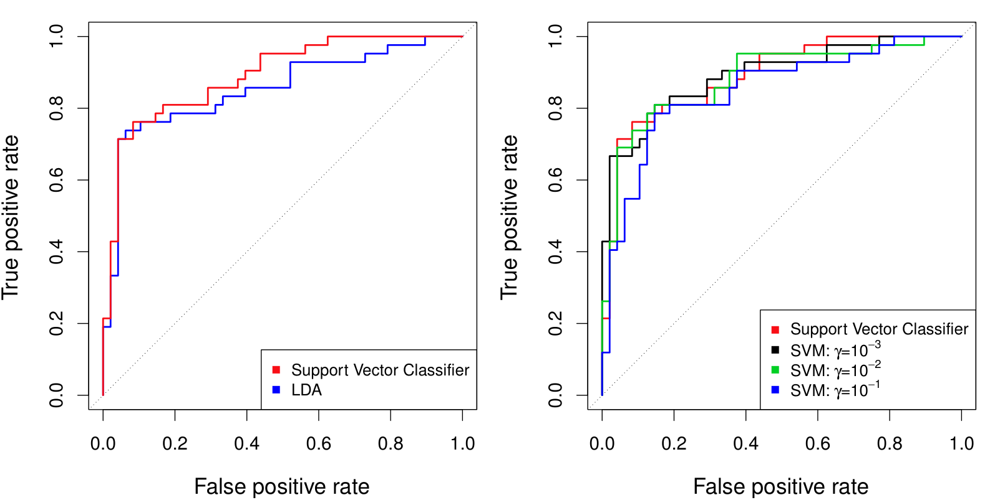
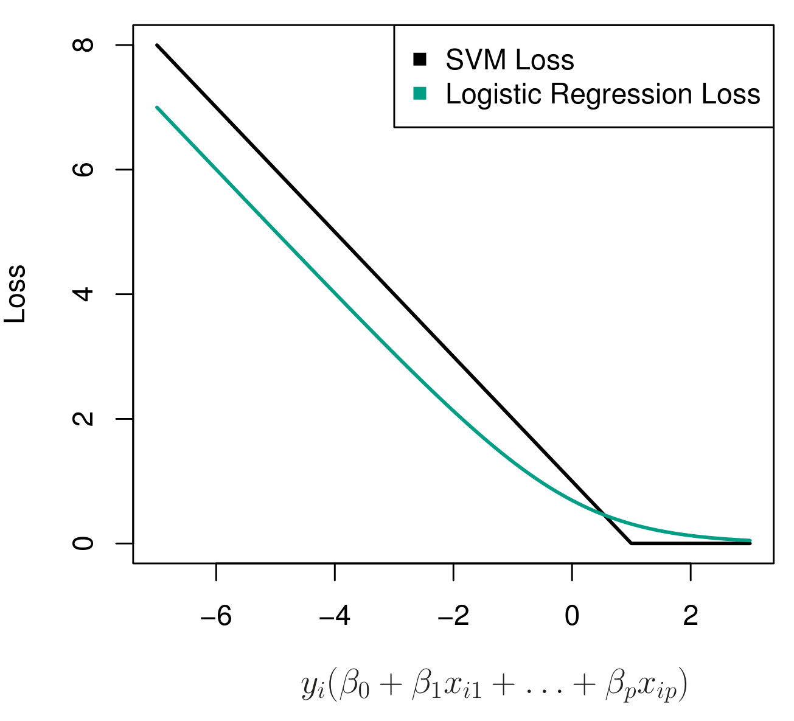
Laboratorio
Los laboratorios con el código completo de este capítulo están disponibles en el sitio oficial del libro: statlearning.com. También puedes acceder a los notebooks en el repositorio oficial de ISLP: ISLP_labs en GitHub.